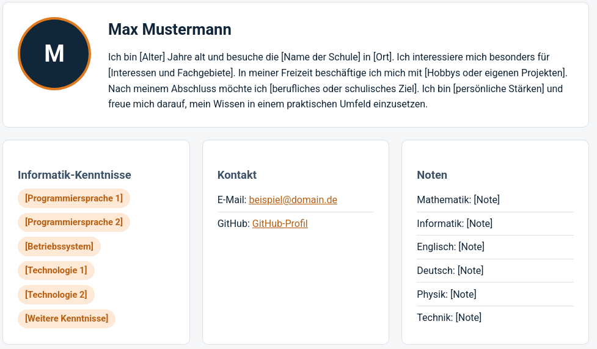
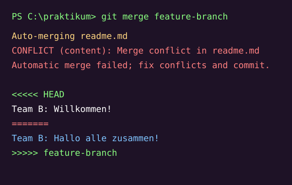
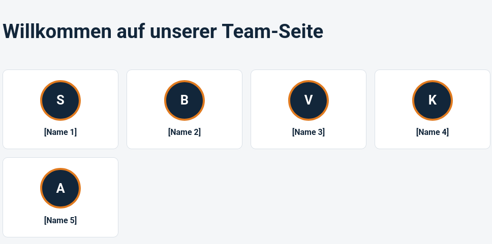
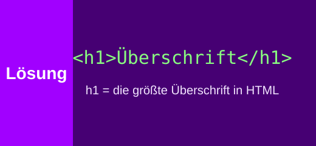
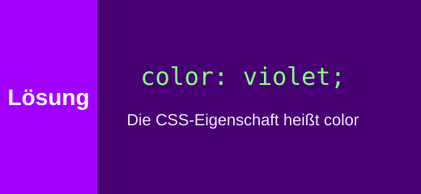
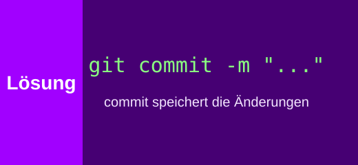

Unsere Technik Woche
In der Codingwoche haben wir mit vier Technologien gearbeitet. Klick auf „Mehr anzeigen“, um mehr zu erfahren.
HTML
Mit HTML haben wir die Grundlagen gelernt und eine eigene Page erstellt.
Mit Tags wie <h1>, <p> oder <img> baut man Überschriften, Texte und Bilder ein.
CSS
Mit CSS haben wir das Aussehen unserer eigenen Page verbessert
Farben, Schriften, Abstände und Layouts wie Flexbox, mit dem diese Cards nebeneinander stehen.
JavaScript
Macht die Seite interaktiv, zum Beispiel Buttons, Menüs oder Animationen.
Auch der „Mehr anzeigen“-Button, den du gerade benutzt, funktioniert mit JavaScript.
Git
Speichert Versionen des Codes und macht Teamarbeit möglich.
Mit Branches und Pull Requests arbeiten mehrere Leute gleichzeitig am selben Projekt, so wie wir an dieser Website.
Unsere Übungen
Persönliche Profilseite
Unsere erste eigene Webseite mit Bild, Text und Link.
<h2>Max Mustermann</h2>
<img src="profil.jpg" alt="Profilbild">
<p>Ich interessiere mich für Programmierung.</p>
Merge-Konflikt mit Git
Alle haben gleichzeitig dieselbe Zeile in der readme.md geändert. So haben wir gelernt, Merge-Konflikte zu lösen.
git add .
git commit -m "my first commit"
git push
Team Presentation Page
Eine gemeinsame Teamseite, bei der jeder in seinem eigenen Branch gearbeitet hat.

Rätsel: Was ist die Antwort?
Hier sind drei Aufgaben aus der Codingwoche. Überleg erst selbst, dann klick auf „Antwort anzeigen“ – die Lösung steckt im Bild.
Aufgabe 1: Welcher Tag macht eine Überschrift?
Welches HTML-Tag erzeugt die größte Überschrift auf einer Seite?

Aufgabe 2: Wie färbe ich Text?
Welche CSS-Eigenschaft färbt einen Text violett ein?

Aufgabe 3: Welcher Befehl speichert Änderungen?
Welcher Git-Befehl nimmt deine Änderungen in die Versionsgeschichte auf?

Wofür nutzt man das?
Alles, was wir in der Codingwoche gelernt haben, wird auch im echten Berufsleben täglich benutzt.
HTML & CSS
- Jede Webseite im Internet besteht aus HTML und CSS, zum Beispiel Online-Shops, Nachrichtenseiten oder Firmenwebsites
- Auch E-Mail-Newsletter werden oft mit HTML gestaltet
- Mit CSS sorgt man dafür, dass eine Seite auf dem Handy genauso gut aussieht wie am Laptop
JavaScript
- Macht Webseiten interaktiv, zum Beispiel Menüs, Buttons oder Bildergalerien
- Prüft Formulare, bevor sie abgeschickt werden (z. B. ob eine E-Mail-Adresse richtig eingegeben wurde)
- Steckt hinter Web-Apps wie Online-Karten, Chats oder Videoplattformen
Git
- Wird in fast jedem Softwareunternehmen benutzt, damit viele Entwickler gleichzeitig am selben Projekt arbeiten können
- Man kann jederzeit zu einer älteren Version zurückspringen, wenn etwas kaputtgeht
- Plattformen wie GitHub speichern den Code online, so wie bei unserem Projekt
Und bei Accenture?
Bei Accenture entwickeln Teams zum Beispiel Websites, Apps und digitale Lösungen für Kunden. Dabei arbeiten oft viele Leute gleichzeitig an einem Projekt, genau wie wir an dieser Website mit Git und Branches.